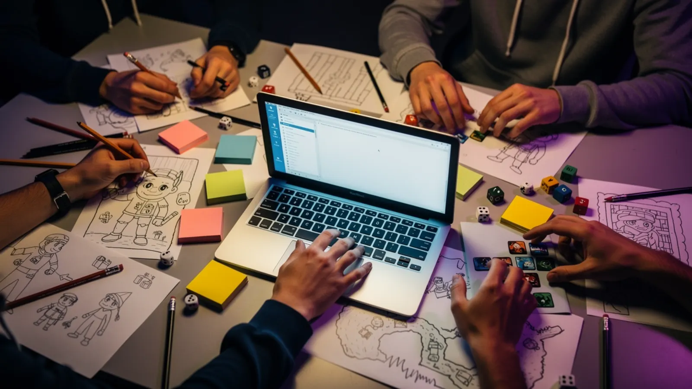

Category is: who we are
Three lines, in the order we mean them. Tap each to light it.
The season so far
Twenty years, charted for the game you have played the most. Hit STRUM: one milestone per note. Save your Star Power for the last one.
Ready when you are
Six notes, six milestones. Strum to start the set.
The first room
GGP begins: a community of LGBTQ+ people making games, and the friends who make room with them.
GGP Scholars
The Scholars program launches, with Take-Two backing it from the start and every year since.
CYSTEM
CYSTEM begins: a year of mentorship for graduate students, pairing them with working professionals.
Global Game Jam
GGP joins Global Game Jam, now in its third year with us.
Collegiate Games Challenge
An inaugural $90,000 awarded to student teams in August 2025.
GDC week
March 1, Zero Proof Board Game Night. March 2, the 21st Annual GGP @ GDC Mixer, both at The Foundry in San Francisco.
The roster
Five programs. Tap a card to flip it.
Your doors in
A half-court of ways to play with us, lightest first. Tap a position. Spot 5 comes last on purpose: it is the number your favorite player wears.
No obligation. Lightest first. If one sounds fun, just reply to Gordon with its number, or with "tell me more."
Or skip the back-and-forthPick a time with Gordoncalendly.com/GGPCharityThis is the calendar Gordon keeps for GGP conversations. Choose any open slot and it goes straight to him. Twenty minutes is plenty to find your door.Why it matters

A room where someone gets seen changes who they become.
You just spent an evening showing our students how a creative career actually gets built. GGP exists to keep doing that, all year, for the people the industry tends to underestimate. We would love to have you in the room.